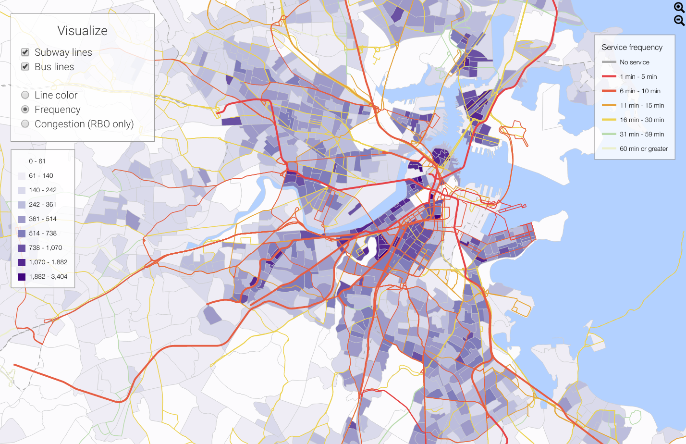

The intention of this project is to rationalize, interpret, and to find recommendations for transportation planning in the Boston Metropolitan Area. Using a combination of both MBTA service and U.S. Census data, this visualization shows where high demand for public transportation is not being met. With special consideration for equity, this visualization tool is able to explore issues of how public transportation service is lacking even in areas with very low car ownership, predominantly low income, or have age groups that are more likelihood of using transit.
While the original assignment was to use D3.js to create aesthetically pleasing data visualizations, we wanted to have some kind of social meaning behind the project. Thus, in order to frame the context and expose how visualizing this data is important, we used this tool to analyze and consider particular neighborhoods of interest within the Boston Metropolitan region that have strong demand for public transit but few options.
Frequency and hours of service were the primary metrics behind quality of transit service. Jarrett Walker, a transportation consultant and author of Human Transit, writes that “frequency is freedom.” When transit comes frequently enough, it allows for passenger’s lives to not be forced to revolve around the occasional passage of a train or bus. Span of service the bus or train operates is also of key importance. Especially in low income areas, the number of transit trips occurring during the off-peak may be higher for non-commute needs and also to access jobs that do not occur during the traditional 9-5 work day.
The visualization features maps showing demographic information by Census Block Group, frequency of service, congestion/passenger volumes. By clicking on a Census Block Group, bar charts showing specific details about the geography will appear under the map.
Check out the visualization here.
